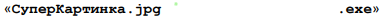

Задания к теме "ВРЕДОНОСНЫЕ ПРОГРАММЫ"
1.Перечислите признаки заражения компьютера вирусом:
замедление работы компьютера
увеличение объёма свободной оперативной памяти
зависание, перезагрузка или блокировка компьютера
ошибки в работе ОС или прикладных программ
возможность запускать некоторые программы и изменять настройки компьютера
ускорение работы компьютера
автоматический запуск неизвестных программ, открытие окон
2.Как называются вирусы, которые внедряются в командные файлы или в веб-страницы?
файловые
загрузочные
макровирусы
скриптовые вирусы
3.Какие файлы повреждают макровирусы?
исполняемые файлы и системные библиотеки
документы, в которых могут быть макросы
командные файлы или веб-страницы
4.Виды компьютерных червей:
почтовые
рекламные
троянские
сетевые
5.Вам на почту прислали письмо с вложенным в него файлом. Стоит ли открывать такой файл?

нет
да
6.Патч – это
обновление программного обеспечения
программа, которая при запуске заражает компьютер
язык программирования
7.С какими целями могут быть исрользованы компьютеры, заражённые сетевым червём?
рассылка спама
массовые DDoS-атаки на сайты в Интернете
установка антивирусных программ
8.Вирусы могут попасть на смартфон после установки
из официального интернет-магазина Google Play
со сторонних сайтов и форумов